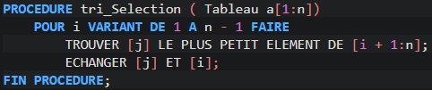
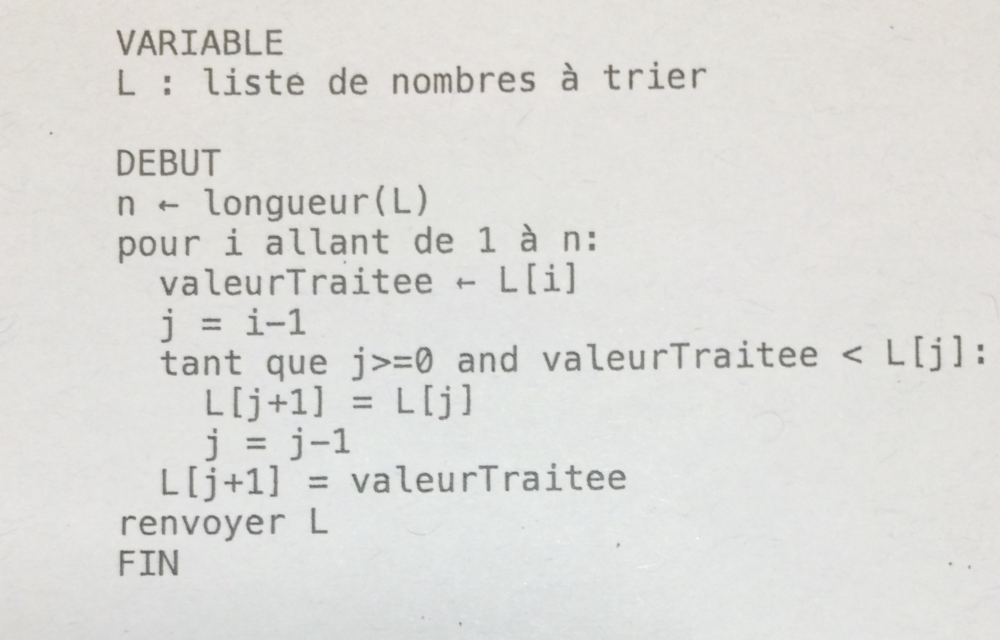

Differents projet ont été éffectué en cours de NSI pour pouvoir maitriser certaines connaissance de base dans l'informatique en globalité.
L'un des thème étudié recemment sont les algorithme de tri. Il en existe deux :

L'algorithme naïf va rechercher le plus grand élément (ou le plus petit), le placer en fin de tableau (ou en début), recommencer avec le second plus grand (ou le second plus petit), le placer en avant-dernière position (ou en seconde position) et ainsi de suite jusqu'à avoir parcouru la totalité du tableau.
Voici son algorithme:
La complexité de cet algorithme en nombre de comparaison est de de l'ordre de n², que l'on écrit O(n²).
L'algorithme avancé consiste à piocher une à une les valeurs du tableau et à les insérer, au bon endroit, dans le tableau trié constitué des valeurs précédemment piochées et triées. Les valeurs sont piochées dans l’ordre où elles apparaissent dans le tableau.
Voici son algorithme:
La complexité de cet algorithme est differente selon cas: